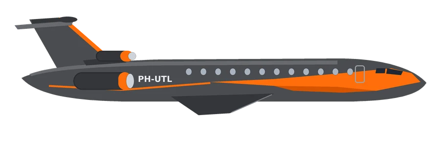

MV
3
LIVE · PH-UTL
De jet van Max,
live.
Volg de Falcon 8X van Max Verstappen op de kaart en speel elke vlucht terug af.
Live op de kaart
Vluchten afspelen
F1-kalender
mv3.lrvdlinden.app
Website door
PixelForges